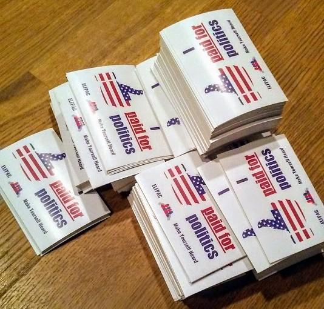

Engaging Leaders of the Future PAC
ELFPAC started as a discussion in my governent and politics class when the
teacher was sick and we had flown through the work the substitute had
given us. We were learning about political action committees, making cynnical
comments about their influence on politics, so I suggested that we start our
own. We had computers and time, so it only took a few minutes to realize that
it wouldn't be difficult at all.
I had some experience with the Colorado Secretary of State and the IRS from
two LLCs I had filed before (Implicit Ink and Makerstring), so we started by
filing for an EIN. I wrote bylaws and it was agreed that I would be Custodian
of Records to handle filing, while my friend would be Treasurer, as she was
almost 18.
To start a political action committee, an organization must file FEC form 1,
which notifies the Federal Elections Commission that you intend to
"electioneer" (a word whose existence is a contradition of democracy). Here,
however, we ran into some trouble. Filing form 1 requires that you name
an FDIC insured bank at which you have an account, however, when we went to
Wells Fargo, the clerk needed to see evidence of our status as a Political
Action Committee. Fortunately, the clerk was very helpful, and allowed us to
file while we sat there, using our future account on the form.
After registering with the Secretary of State and filing for 527 status
with the IRS, we were ready to begin fundraising. My friend designed a logo
which we could use for campaigning and I began work on the website (which
I never really finished).
After the first month, it was time to think about filing. The FEC has a
software called FECfile which works really well, although the UI is a bit
rusty, and with a little practice, I refined my technique for filing reports
to an art. The Colorado Secretary of State has a web-based filing application
called TRACER, which is equally functional but less interesting to use.
The IRS requires quarterly reports from 527 organizations, filed as form
8872. To file electronically, a committee must mail form 8453-X to
the IRS, and they will mail back a username and password. We had not yet
received ours, however, so I decided to call their TE/GE Customer Support
Line.
Most of my call was spent on hold, but the employees on the other end
were extremely nice and understanding. Unfortunately, the best solution
they could offer was a quote from the FAQ page I had been staring at for
the last hour, but I resent 8453-X, and received a username and password
a few weeks later.
I have also had occasion to be on the phone with the FEC. A few months ago,
they send a Request for Additional Information (RfAI) because we had been filing
monthly reports, and they had thought we were filing quarterly. Once again,
the employees (this time our own "Committee Finance Analyst") were very
nice, and this time extremely helpful. The analyst walked me through
every step I had to take, and I was off the phone in ten minutes.
The plan for ELFPAC is to contact various representatives in the Colorado
and US House and Senate and speak for young adults, who have historically
had abysmally low voter turnout rates.
Changes to Patent Law
Recently, there have been several Supreme Court cases around patent law,
in 2013, the Court declared a patent owned by Myriad Genetics on a human
gene to be illegal, because under section 101 of the Patent Act, things that
occur in nature cannot be patented, even if they are isolated.
This decision, and the code it references makes perfect sense, but a few
problems arise when naturally occuring treatments are inelligible for
patents, and are thus avoided by pharmaceutical companies. I am referring
specifically to phage therapy.
Here I will argue that an excemption should be made for bacteriophages,
and this will be presented to PhRMA when it is complete.
Stickers!
This section addresses all outreach and advertising, not just stickers
or ELFPAC, although these are used as examples.
The first step for outreach is almost always graphic design. I like to
use Inkscape because it is simple,
powerful, and open source. For the ELFPAC stickers and the Scatter logo,
I chose a theme before I did any design.
At this point, there are few resources more valuable than openclipart.org.
The thumbs up on the ELFPAC stickers comes from that site, and it hosts a huge
variety of other artwork, all of which is CC.
The default file type for Inkscape is SVG, which is nice for compatibility
purposes, but typically doesn't work for buying printed products online.
I exported the ELFPAC logo at 450 dpi, and bought 1000 stickers for a
little over $30.

Wow. 1000 is one of those numbers that are hard to appreciate until you
can actually hold that many of something. The picture above shows about
600, after I managed to give away 400 at school and at work. However,
the stickers were very popular, and got the ELFPAC logo out there quite
effectively.